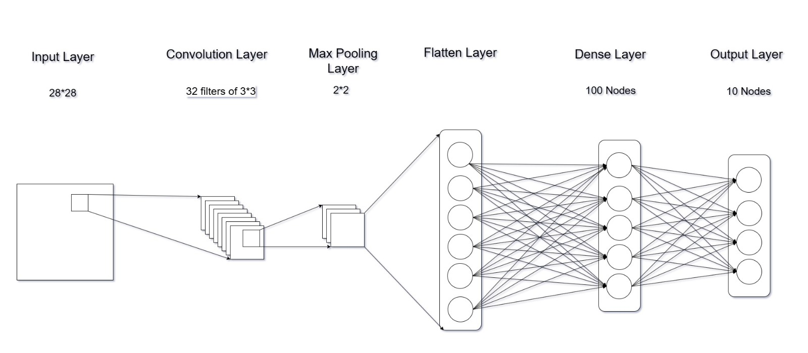

Fashion MNIST Classification Using Baseline CNN: A Deep Learning Approach
1Texas A&M University
Abstract
The Fashion MNIST dataset is a widely used benchmark for evaluating machine learning and deep learning models in image classification tasks. This project explores the application of a Baseline Convolutional Neural Network (CNN) to classify the 10 classes of grayscale images in the Fashion MNIST dataset, such as T-shirts, dresses, sneakers, and more. The Baseline CNN architecture is designed to provide an effective yet computationally efficient solution for the classification task, serving as a foundation for further enhancements and experimentation. By leveraging the power of convolutional layers for feature extraction and dense layers for decision-making, the model achieves competitive accuracy while maintaining simplicity. This study aims to demonstrate the effectiveness of CNNs on fundamental image classification tasks and provide insights into the performance of baseline architectures for real-world datasets.
Dataset Summary
Dataset

The Fashion MNIST (FMNIST) dataset, introduced by Zalando Research, is a widely used benchmark for image classification tasks. It contains 70,000 grayscale images of size 28×28 pixels, divided into 60,000 training and 10,000 testing samples. Each image represents a fashion item categorized into one of 10 classes: T-shirt/top, trouser, pullover, dress, coat, sandal, shirt, sneaker, bag, or ankle boot. The dataset serves as a more challenging alternative to the traditional MNIST dataset of handwritten digits due to its increased complexity and variety. Fashion MNIST maintains the same image size and structure as MNIST, enabling seamless replacement in models. It is widely used for benchmarking classification models, testing neural network architectures, and evaluating computer vision techniques.
Model Employed
The proposed CNN model comprises a sequential architecture with a total of five layers: a convolutional layer, a pooling layer, a flattening layer, and two dense layers. The initial convolutional layer uses 32 filters with a 3*3 kernel size, ReLU activation, and He initialization, processing input images of dimensions 28*28*1. It is followed by a 2*2 max pooling layer for down-sampling. The output is flattened and passed to a fully connected dense layer with 100 neurons and ReLU activation. Finally, a softmax output layer with 10 neurons is used for classification into 10 categories. The model is trained using the Stochastic Gradient Descent (SGD) optimizer with a learning rate of 0.01 and a momentum of 0.9. Categorical cross-entropy is employed as the loss function, and the model’s performance is evaluated using accuracy as a metric.
Evaluation
The performance of the baseline CNN model was evaluated on the Fashion MNIST test dataset, achieving a test accuracy of 90.47%. The evaluation metrics, confusion matrix, and training-validation accuracy graph provide a detailed analysis of the model's performance.
Classification Metrics
The classification report highlights the precision, recall, and F1-score for each of the 10 classes. The model demonstrates robust performance, with macro-averaged precision, recall, and F1-score of approximately 91% each. High accuracy is observed for most classes, though minor misclassifications occur for specific overlapping categories, such as Class 6 (shirt) and Class 4 (coat).
Confusion Matrix
The confusion matrix provides insight into class-wise predictions. It shows that while the majority of predictions are correct, some confusion exists between visually similar fashion items. For example, shirts (Class 6) are occasionally misclassified as coats (Class 4), which is consistent with their visual resemblance.
Training and Validation Accuracy
The training-validation accuracy plot demonstrates steady improvement during training, with the model converging after around 10 epochs. The slight divergence between training and validation accuracy indicates minimal overfitting, showcasing the model’s generalization capability.

This evaluation confirms the model's efficacy in handling the complexity of the Fashion MNIST dataset while identifying areas for further optimization, such as addressing class confusion.